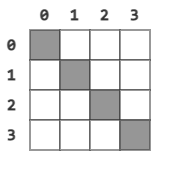

Préparer ses exercices avec pixel_art
Sommaire :
Importation du module¶
On commence par importer le module pixel_art qui doit être au préalable attaché à l'activité (voir la liste des fichiers annexes ) :
from pixel_art import * # pour charger le module et ses fonctionnalités
Vous pouvez télécharger le module en accédant à la liste des fichiers annexes ou voir la dernière version directement ici : https://github.com/germainbecker/SNT/blob/master/Capytale/Python/pixel_art/pixel_art.py.
Pensez aussi à afficher les numéros de ligne des cellules de code : Affichage > Afficher/Masquer les numéros de ligne.
Écrire un programme et afficher l'image correspondante¶
Il suffit d'écrire le programme et d'appeler la fonction afficher_image pour finir, avec les paramètres souhaités :
creer_image(5, 5)
colorier(0, 1)
for x in range(2, 5):
colorier(x, 3)
afficher_image()
#afficher_image(correction=True) # pour voir les numéros de lignes du script
#afficher_image(tp=20) # pour modifier la taille des pixels (30 par défaut)
#afficher_image(coord=False) # pour masquer les coordonnées
#afficher_image(grille=False) # pour masquer la grille
On peut aussi animer le pixel art en donnant la valeur True au paramètre animation :
creer_image(5, 5)
colorier(0, 1)
for x in range(2, 5):
colorier(x, 3)
afficher_image(animation=True)
Remarques :
- Il est possible de combiner tous ces paramètres.
- L'animation n'est possible que pour des images dont la définition est inférieure ou égale à 1000 pixels (pour des raisons de mémoire)
Dessiner librement avec demarrer_dessin_libre¶
On utilise la fonction demarrer_dessin_libre à la place de afficher_image :
creer_image(5, 5)
for k in range(4):
colorier(k, k)
demarrer_dessin_libre()
#demarrer_dessin_libre(correction=True) # pour afficher les numéros de lignes du scrip
Vérifier un programme avec verifier_programme¶
On utilise la fonction verifier_programme en lui passant la liste des pixels attendue :
creer_image(4, 4)
for k in range(4):
colorier(k, k)
verifier_programme([[(150, 150, 150), (255, 255, 255), (255, 255, 255), (255, 255, 255)], [(255, 255, 255), (150, 150, 150), (255, 255, 255), (255, 255, 255)], [(255, 255, 255), (255, 255, 255), (150, 150, 150), (255, 255, 255)], [(255, 255, 255), (255, 255, 255), (255, 255, 255), (150, 150, 150)]])
Si vous trouvez la liste de pixels trop longue, il est possible de la stocker dans un fichier annexe et d'importer ce fichier (on peut aussi la stocker dans une variable dans une autre cellule). Ici, dans le fichier annexe reponses.py attaché à ce notebook, on a définit une liste pixels_ex1 dont la valeur est la liste des pixels attendus.
from reponses import * # pour importer tout le module reponses.py
creer_image(4, 4)
for k in range(4):
colorier(k, k)
verifier_programme(pixels_ex1)
On peut alors facilement proposer des exercices à trous pour les élèves :
EXEMPLE : Complétez le programme ci-dessous pour créer le pixel art suivant.

creer_image(..., ...)
for k in range(...):
colorier(..., ...)
verifier_programme(pixels_ex1)
Sauvegarder une image¶
Il suffit d'appeler la fonction sauvegarder une fois que l'image a été affichée :
creer_image(4, 4)
for k in range(4):
colorier(k, k)
afficher_image() # AVANT de sauvegarder l'image
sauvegarder('exemple1')
# IMAGE D'UNE GRILLE VIDE
creer_image(9, 9)
afficher_image() # AVANT de sauvegarder l'image
sauvegarder("grille_9x9")
Récupérer les pixels d'une image¶
On appelle la fonction recuperer_pixels après avoir écrit le programme :
creer_image(4, 4)
for k in range(4):
colorier(k, k)
afficher_image() # non obligatoire
recuperer_pixels()
Fonctionnalités supplémentaires¶
On peut aussi :
- créer des pixels colorés (peut être intéressant sur le thème de la photographie numérique en SNT)
- créer une liste à partir d'une liste de pixels
creer_image(5, 5)
colorier(3, 1, (255, 0, 255)) # on donne le triplet (R,V,B) en 3ème paramètre
afficher_image()
pixels = [
[(255, 255, 255), (0, 0, 0), (255, 0, 255)],
[(0, 0, 200), (255, 0, 100), (25, 214, 65)]
]
mettre_dans_image(pixels)
afficher_image()
Références :
- Le concept des exercices a été imaginé par Mathieu Degrange. Son projet (voir sur GitHub) est sous licence MIT. Merci à lui !
- Le module
pixel_artutilisé dans ce notebook a été développé par Germain Becker, pour rendre accessible le concept dans Basthon et donc dans Capytale.
Germain Becker, Lycée Emmanuel Mounier, ANGERS
Ce document est diffusé sous la licence CC BY-SA 4.0.